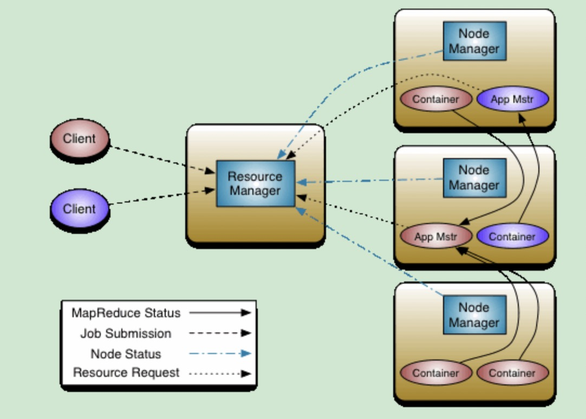
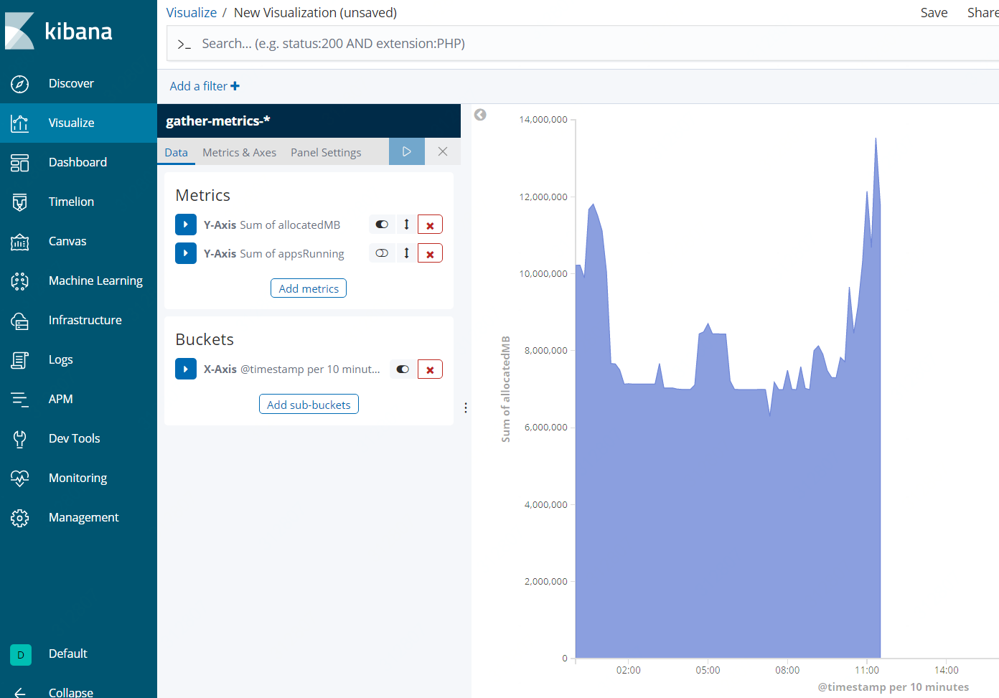

YARN
https://hadoop.apache.org
A framework for job scheduling and cluster resource management.
一 部署
角色
ResourceManager、NodeManager

客户端
Job、AppMaster、Container
AppMaster是一个YARN job运行时第一个由ResourceManager启动的container，然后负责整个job的运行，包括container的申请、启动、kill、状态检查等。
每种类型的job都需要提供自己的AppMaster。
YARN只提供了MapReduce类型job的AppMaster。
Spark on YARN的AppMaster：
org.apache.spark.deploy.yarn.ApplicationMaster
HA
zk节点
/yarn-leader-election/${yarn.resourcemanager.cluster-id}/ActiveBreadCrumb
/yarn-leader-election/${yarn.resourcemanager.cluster-id}/ActiveStandbyElectorLock
代码：
org.apache.hadoop.yarn.server.resourcemanager.EmbeddedElectorService
二 常用命令
yarn node
yarn queue - status root
yarn top
yarn application - list - appStates ALL - appTypes MapReduce|more
yarn rmadmin
yarn logs - applicationid=$applicationId
三 资源管理
计算资源
CPU、内存
管理
queue
scheduler
- FIFO：先进先出
- Capacity：按百分比配置
- Fair：按具体的核数和内存数配置
四 API
http://:8088$ip/ws/v1/cluster/metrics
http://:8088$ip/ws/v1/cluster/scheduler
http://:8088$ip/ws/v1/cluster/apps
通过API获取指标之后对接ELK 
五 数据本地性 Data Locality
Moving Computation is Cheaper than Moving Data
Spark Task分配过程
job->stage-task
resourceOffer会调用getAllowedLocalityLevel来获取当前允许启动任务的locality级别，getAllowedLocalityLevel内部通过时间delay以及是否有更多task来控制允许哪些级别，比如一开始只允许PROCESS_LOCAL级别，delay一段时间之后，再允许启动PROCESS_LOCAL和NODE_LOCAL级别的task
Data Locality等级：PROCESS_LOCAL, NODE_LOCAL, NO_PREF, RACK_LOCAL, ANY
配置：spark.locality.wait
Impala
Efficiently retrieving data from HDFS is a challenge for all SQL-on-Hadoop systems. In order to perform data scans from both disk and memory at or near hardware speed, Impala uses an HDFS feature called short-circuit local reads to bypass the DataNode protocol when reading from local disk. Impala can read at almost disk bandwidth (approx.100MB/s per disk) and is typically able to saturate all available disks. We have measured that with 12 disks, Impala is capable of sustaining I/O at 1.2GB/sec.